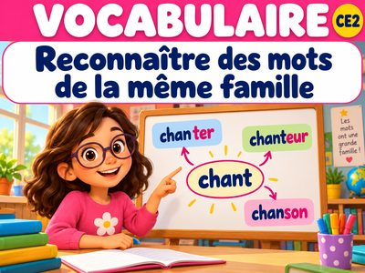
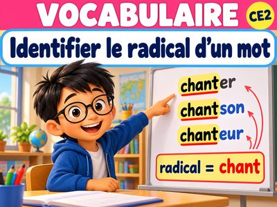
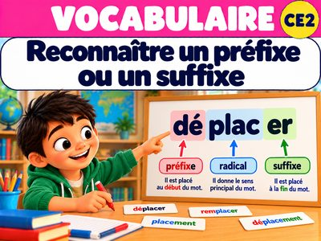
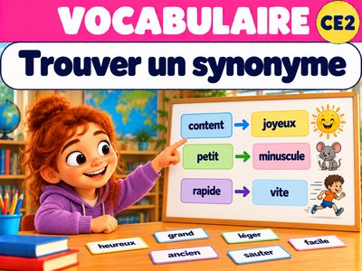
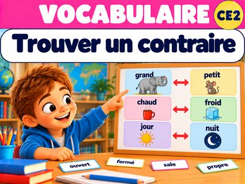

VOC-P2-01
Reconnaître des mots de la même famille
Je vérifie la partie commune ET le sens des mots.
10 défis interactifs →
VOC-P2-02
Identifier le radical d’un mot
Je repère le radical dans des mots simples et j’observe ses variations.
10 défis interactifs →
VOC-P2-03
Reconnaître un préfixe ou un suffixe
Je construis des mots et j’observe comment leur sens change.
10 défis interactifs →
VOC-P2-04
Trouver un synonyme
Je remplace un mot par un autre en conservant le sens.
10 défis interactifs →
VOC-P2-05
Trouver un contraire
Je trouve le contraire d’un mot et je l’emploie correctement.
10 défis interactifs →